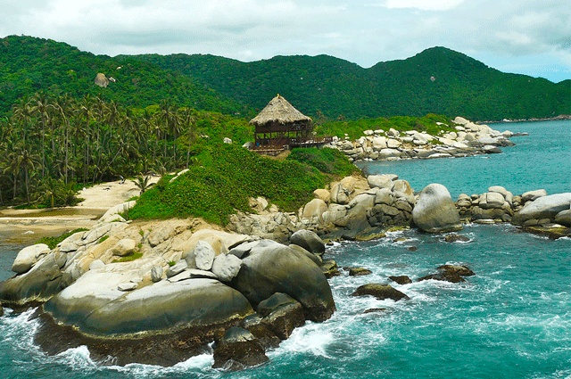

Somos una entidad sin ánimo de lucro, creada el 24 de febrero de 1995 por la Federación Nacional de Cafeteros de Colombia y el Comité Departamental de Cafeteros del Quindío. Nuestro objetivo principal es mostrar en un contexto natural, divertido y seguro el desarrollo que genera el café en nuestro país para rendir un homenaje a la pujanza de los cafeteros en Colombia.
Estamos ubicados en la zona central cafetera de Colombia, en el centro occidente del país, a 20 minutos de la ciudad de Armenia capital del departamento del Quindío y a 5 minutos del municipio de Montenegro.
Contamos con una área de 96 hectáreas, 56 de ellas construidas en una mezcla perfecta entre lo tradicional y lo moderno, en ella más de 20 atracciones mecánicas y culturales se encuentran inmersas entre árboles y plantas; aproximadamente 4000 especies con una temperatura promedio de 21 grados. El Parque del Café es un recorrido por las costumbres de una tradición que se extiende sobre el territorio del departamento del Quindío; marco de un destino turístico que ofrece a los visitantes un espacio de sano esparcimiento.

Nombres y Apellidos Completos:Fander Adrian Orozco Toro
Fecha de Nacimiento:23 de Noviembre de 1.971
Lugar de Nacimiento:Medellín - Antioquia>
Correo Electronico: fanderorozco@hotmail.com
Dirección: Calle 20 Sur # 25 - 30
Teléfono: 311-2353154